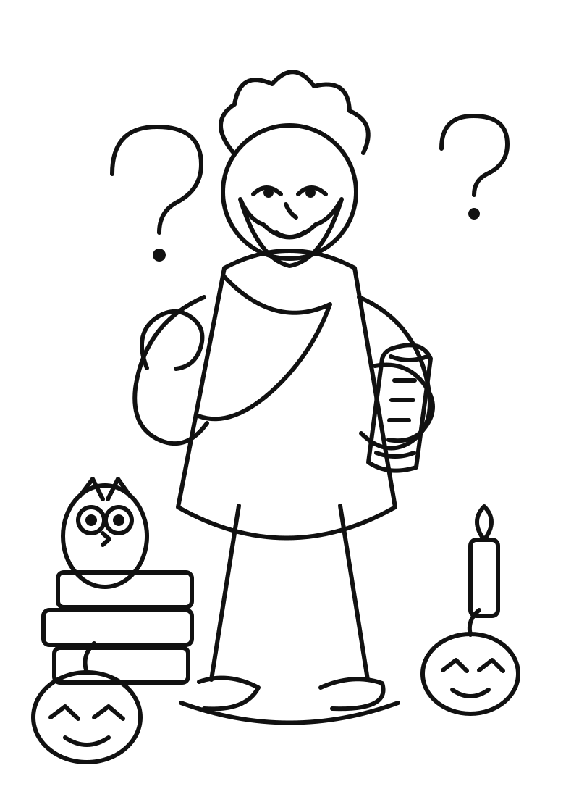
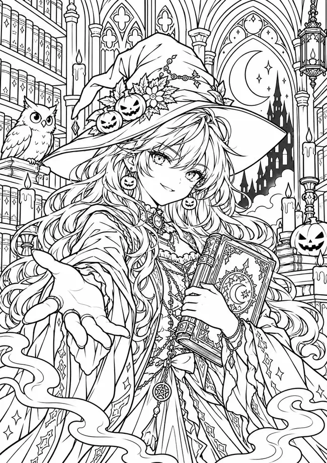
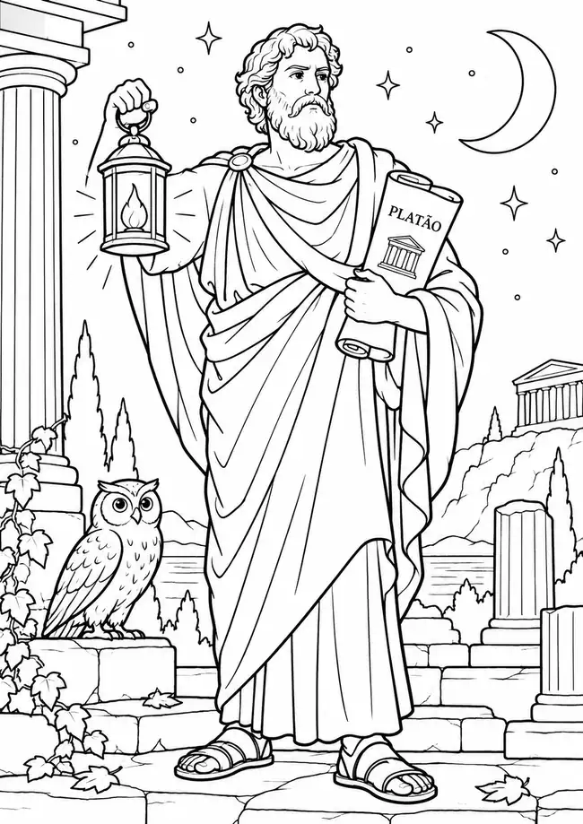
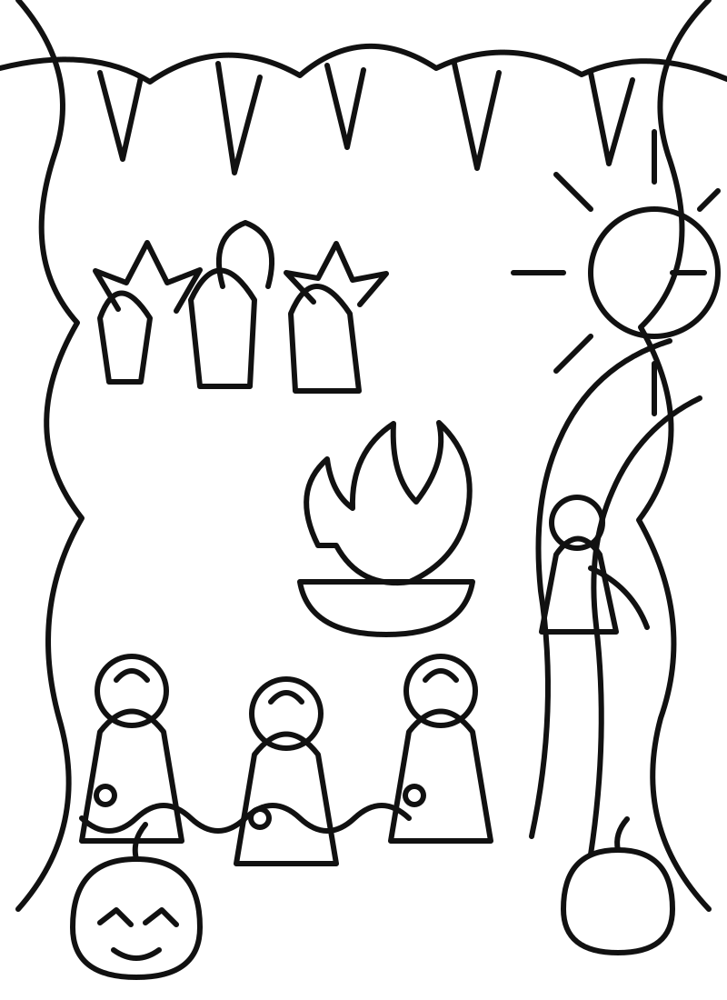
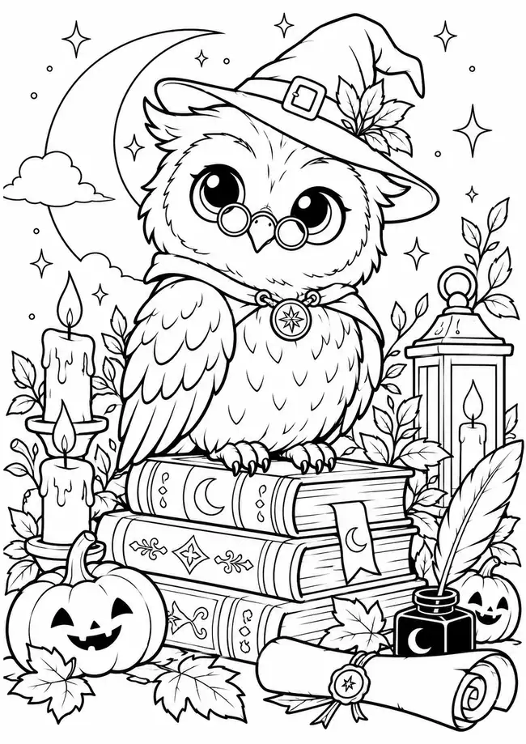
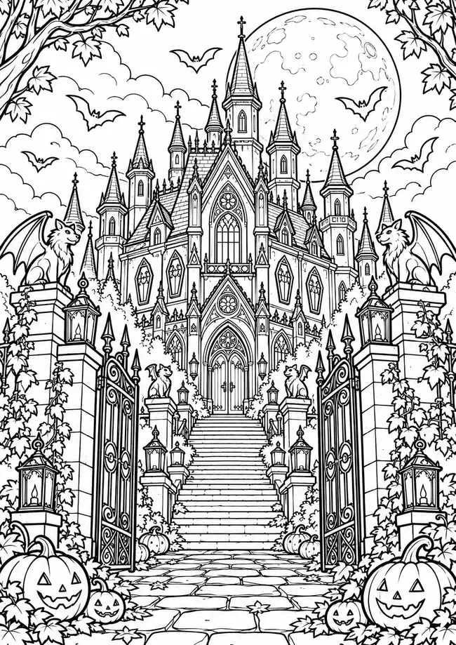

👴 FILÓSOFO • FÁCIL
Sócrates na Noite de Halloween
Perguntas, livros, coruja e abóboras para trabalhar diálogo e investigação.
Seis páginas em preto e branco, com estética Halloween cartoon e temas do Portal Filosófico da Névoa. Perfeitas para mural, tarefa, capa de caderno ou atividade criativa.
🎨 Abrir coleção
Clique em “Abrir arte” para visualizar em tela cheia ou em “Baixar” para salvar a página.

Perguntas, livros, coruja e abóboras para trabalhar diálogo e investigação.

Platão com sua lanterna, ruínas gregas e atmosfera noturna.

Prisioneiros, sombras, fogo e o caminho em direção à luz.
A anfitriã do portal em uma biblioteca gótica cheia de detalhes.

Sabedoria, livros, velas, pergaminho e Halloween em uma página fofa.

A grande mansão do portal com lua, morcegos, gárgulas e abóboras.
Depois de colorir, peça aos alunos para escrever no verso uma pergunta, conceito ou frase relacionada à imagem. A Caverna de Platão funciona especialmente bem como atividade de interpretação visual.
{kind=link}
{kind=link}
{kind=link}
{kind=link}
{kind=link}
{kind=link}